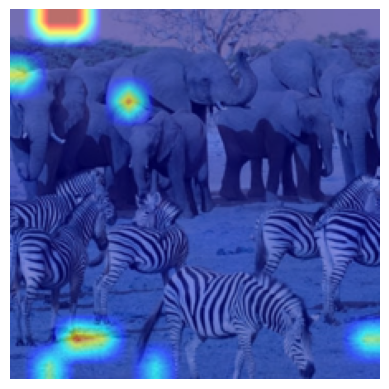
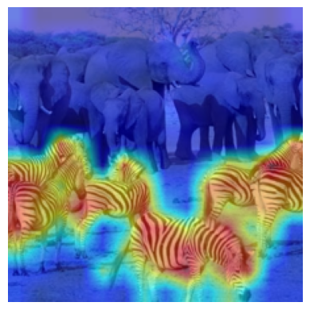

Let’s install the txv package.#
[1]:
# !pip install txv
Import necessary libraries.#
[2]:
import sys
sys.path.append('..')
from txv.exp import *
from txv.utils import *
from txv.vit import *
import matplotlib.pyplot as plt
Model Initialization#
We will use vit-base-patch16-224 model in this tutorial. You can try this with other models in Available Models section as well. Note that this package works with models in Available Models section only. We initialize 2 models, one with lrp=True and other with lrp=False. LRP based explanation methods like LRP and Beyond Attention require relevance propogation which is enabled through lrp=True.#
[3]:
device = torch.device('cuda:0')
model1 = vit_base_patch16_224(lrp=True).to(device)
model2 = vit_base_patch16_224().to(device)
[4]:
# Read the image
image = read_image('../images/zebra-elephant.png').to(device)
[5]:
# Generate the output
output = model1(image)
[6]:
# Print the top classes
print_top_classes(output)
Top 10 classes:
340 : zebra value = 12.749 prob = 94.2%
386 : African elephant, Loxodonta africana value = 9.485 prob = 3.6%
101 : tusker value = 7.923 prob = 0.8%
385 : Indian elephant, Elephas maximus value = 7.684 prob = 0.6%
352 : impala, Aepyceros melampus value = 5.946 prob = 0.1%
351 : hartebeest value = 5.460 prob = 0.1%
343 : warthog value = 5.416 prob = 0.1%
9 : ostrich, Struthio camelus value = 5.292 prob = 0.1%
353 : gazelle value = 5.248 prob = 0.1%
293 : cheetah, chetah, Acinonyx jubatus value = 4.881 prob = 0.0%
Note that we use model1 for LRP which is initialized with lrp=True which is not used in further explanation methods(except Beyond Attention).#
LRP#
[7]:
lrp = LRP(model1)
mask_lrp = lrp.explain(image)
inp,mask_lrp = postprocess(image, mask_lrp)
cam = show_exp_on_image(inp[0], mask_lrp[0])
plt.imshow(cam)
plt.axis('off')
plt.show()
Integrated Gradients#
[8]:
ig = IntegratedGradients(model2)
mask_ig = ig.explain(image)
inp,mask_ig = postprocess(image, mask_ig)
cam = show_exp_on_image(inp[0], mask_ig[0])
plt.imshow(cam)
plt.axis('off')
plt.show()

Raw Attention#
[9]:
ra = RawAttention(model2)
mask_ra = ra.explain(image,7)
# Take mean over all the heads and then visualize CLS token
mask_ra = mask_ra.mean(dim=1)[:,0,1:]
#Uncomment the below line for distilled models as they have DIST token also.
#You can try visualizing the DIST token as well.
# mask_ra = mask_ra.mean(dim=1)[:,0,2:]
inp,mask_ra = postprocess(image, mask_ra)
cam = show_exp_on_image(inp[0], mask_ra[0])
plt.imshow(cam)
plt.axis('off')
plt.show()

Attention Rollout#
[10]:
ar = AttentionRollout(model2)
mask_ar = ar.explain(image,layer=1)
inp,mask_ar = postprocess(image, mask_ar)
cam = show_exp_on_image(inp[0], mask_ar[0])
plt.imshow(cam)
plt.axis('off')
plt.show()

GradSAM#
[11]:
gradsam = GradSAM(model2)
mask_gradsam = gradsam.explain(image)
inp,mask_gradsam = postprocess(image, mask_gradsam)
cam = show_exp_on_image(inp[0], mask_gradsam[0])
plt.imshow(cam)
plt.axis('off')
plt.show()

Beyond Attention#
[12]:
ba = BeyondAttention(model1)
mask_ba = ba.explain(image)
inp,mask_ba = postprocess(image,mask_ba)
cam = show_exp_on_image(inp[0],mask_ba[0])
plt.imshow(cam)
plt.axis('off')
plt.show()

Generic Attention#
[13]:
ga = GenericAttention(model2)
mask_ga = ga.explain(image)
inp,mask_ga = postprocess(image,mask_ga)
cam = show_exp_on_image(inp[0],mask_ga[0])
plt.imshow(cam)
plt.axis('off')
plt.show()

Transition Attention Map(TAM)#
[14]:
#Note that TAM works with ViT-based models only.
tam = TAM(model2)
mask_tam = tam.explain(image)
inp,mask_tam = postprocess(image, mask_tam)
cam = show_exp_on_image(inp[0], mask_tam[0])
plt.imshow(cam)
plt.axis('off')
plt.show()
Beyond Intuition - token-wise#
[15]:
bi = BeyondIntuition(model2)
mask_bi = bi.explain(input=image,method='token')
inp,mask_bi = postprocess(image,mask_bi)
cam = show_exp_on_image(inp[0],mask_bi[0])
plt.imshow(cam)
plt.axis('off')
plt.show()

Beyond Intuition - head-wise#
[16]:
bi = BeyondIntuition(model2)
mask_bi = bi.explain(image,method='head')
inp,mask_bi = postprocess(image,mask_bi)
cam = show_exp_on_image(inp[0],mask_bi[0])
plt.imshow(cam)
plt.axis('off')
plt.show()
